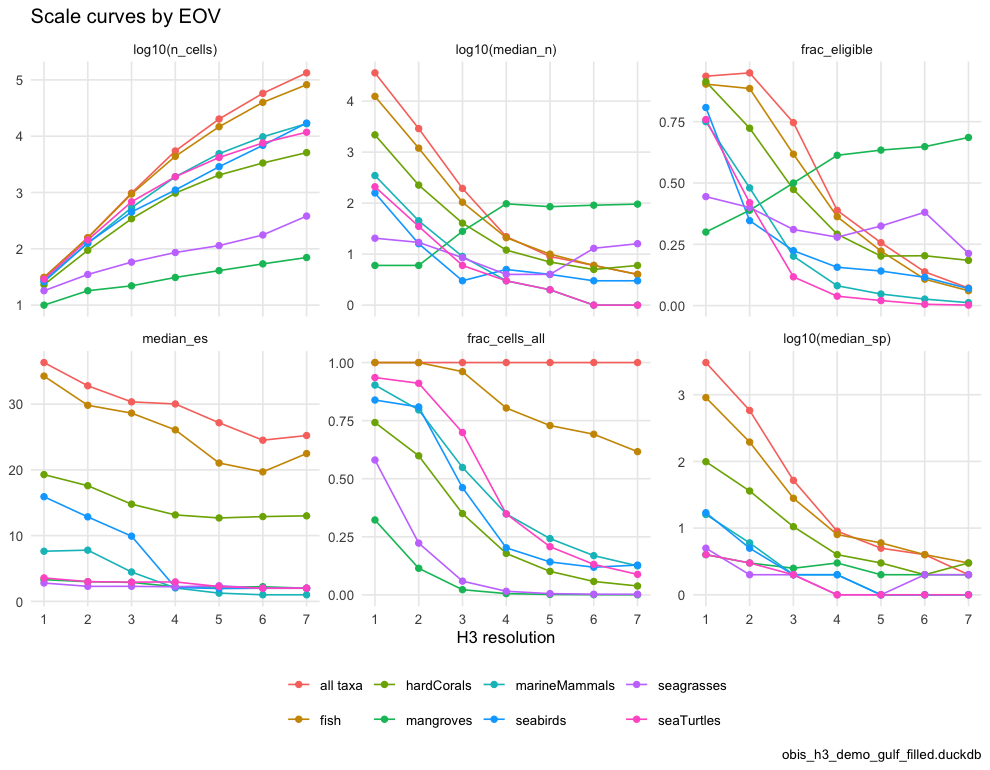
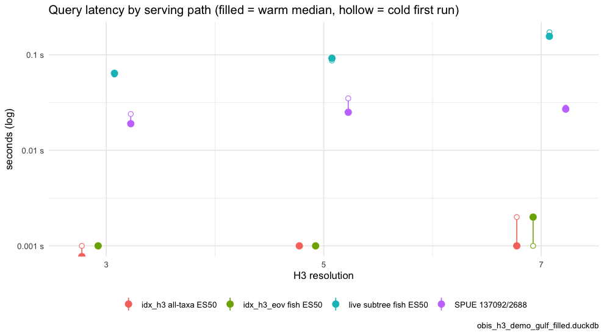
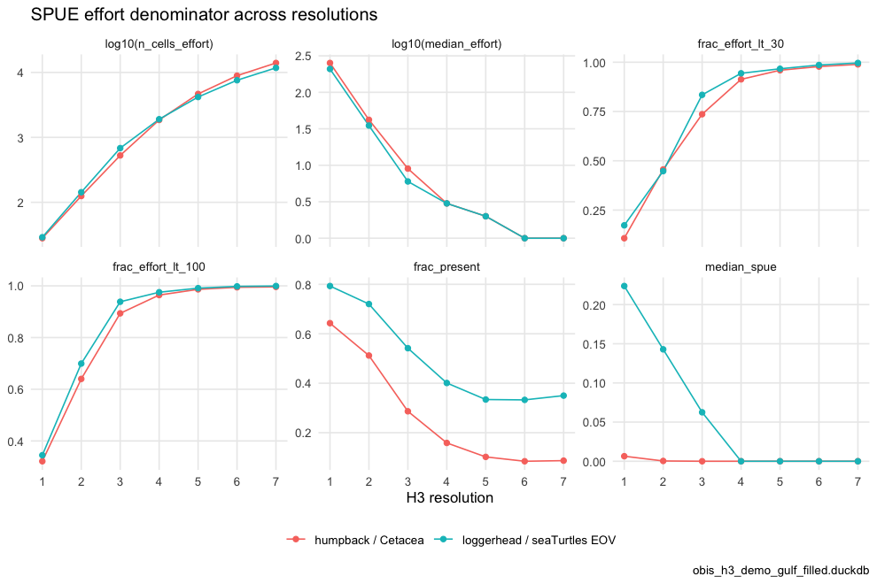

H3 is a hierarchy: each drop in resolution aggregates ~7 child
hexagons into a parent. Summarizing OBIS with the same query at
different H3 resolutions therefore trades spatial
detail against per-cell sample size and
query cost. This article walks those trade-offs and the
choices they force in the h3t serving design — especially
for the live children-taxa and SPUE paths from vignette("taxon_children").
It also produces Tables 2, 3 and 5 and Figure 3 of the OBIS → H3 → EOV
manuscript.
library(obisindicators)
library(dplyr)
library(ggplot2)
# the store named by OBIS_H3_DUCKDB; paper/build_demo_store.R builds a regional demo
con <- obis_store_connect()Precomputed. The store is not available where this documentation is built, so the chunks below were run locally by
data-raw/precompute_articles.Rand their output committed. This render used obis_h3_demo_gulf_filled.duckdb, a regional demo store (Gulf of Mexico + Caribbean, seepaper/build_demo_store.R). The manuscript’s numbers come from the global store.
What the store holds (Table 2)
obis_store_stats() summarizes the layers of a store: the
species-level occ_h3 counts at resolution tiers 3/5/7, the
precomputed all-taxa idx_h3, per-coarse-rank
idx_h3_taxon and per-EOV idx_h3_eov indicator
layers (resolutions 1–7), and the WoRMS taxon table that
makes any-rank filters possible.
s <- obis_store_stats(con)
knitr::kable(s$totals, caption = "Totals")| metric | value |
|---|---|
| records | 8260407 |
| species | 27521 |
| aphiaids | 27762 |
| cells_base | 133069 |
| year_min | 1720 |
| year_max | 2025 |
| taxon_rows | 607919 |
| eov_members | 79920 |
| database_size | 231.0 MiB |
knitr::kable(s$tables, caption = "Tables and row counts")| table | rows |
|---|---|
| eov | 79920 |
| idx_h3 | 217521 |
| idx_h3_eov | 243891 |
| idx_h3_taxon | 1874492 |
| occ_h3 | 3740114 |
| taxon | 607919 |
knitr::kable(
s$cells_by_res |> mutate(area_km2 = round(area_km2), edge_km = round(edge_km, 1)),
caption = "Occupied cells by H3 resolution")| res | n_cells | records | area_km2 | edge_km |
|---|---|---|---|---|
| 1 | 31 | 8260407 | 609788 | 483.1 |
| 2 | 157 | 8260407 | 86802 | 182.5 |
| 3 | 977 | 8260407 | 12393 | 69.0 |
| 4 | 5459 | 8260407 | 1770 | 26.1 |
| 5 | 20169 | 8260407 | 253 | 9.9 |
| 6 | 57659 | 8260407 | 36 | 3.7 |
| 7 | 133069 | 8260407 | 5 | 1.4 |
Cells vs. density across resolution (Fig. 3a)
Take one taxon — all Cetacea (AphiaID 2688, an infraorder, so not a
Darwin Core rank column; see vignette("taxon_children"))
— and summarize it at every stored resolution. As resolution rises, the
cell count climbs roughly ×7 per step while the median records-per-cell
falls: the signal spreads thinner, and the fraction of cells that can
support ES(50) (at least 50 records) collapses.
calc_scale_curves(con, res = 1:7, aphiaid = 2688L, group = "Cetacea") |>
select(res, n_cells, median_n, frac_eligible, median_es) |>
mutate(frac_eligible = round(frac_eligible, 3), median_es = round(median_es, 2))
#> res n_cells median_n frac_eligible median_es
#> 1 1 28 252.5 0.750 7.40
#> 2 2 125 42.0 0.464 7.52
#> 3 3 527 9.0 0.188 5.24
#> 4 4 1854 3.0 0.062 2.72
#> 5 5 4662 2.0 0.027 1.09
#> 6 6 8911 1.0 0.012 1.00
#> 7 7 13983 1.0 0.007 1.00calc_scale_curves() does the same for any filter. Here
it is for all taxa and for each of the seven Essential Ocean Variables
(EOVs; see vignette("eov")):
RES <- 1:7
sc <- bind_rows(
calc_scale_curves(con, res = RES, group = "all taxa"),
bind_rows(lapply(EOV_ORDER, function(e)
calc_scale_curves(con, res = RES, eov = e, group = e))))
sc |>
select(group, res, n_cells, frac_cells_all, median_n, frac_eligible, median_es, median_sp) |>
mutate(across(c(frac_cells_all, frac_eligible), ~ round(.x, 3)), median_es = round(median_es, 2))
#> group res n_cells frac_cells_all median_n frac_eligible median_es
#> 1 all taxa 1 31 1.000 35746.0 0.935 36.32
#> 2 all taxa 2 157 1.000 2888.0 0.949 32.79
#> 3 all taxa 3 977 1.000 194.0 0.746 30.34
#> 4 all taxa 4 5459 1.000 22.0 0.388 30.03
#> 5 all taxa 5 20169 1.000 9.0 0.257 27.17
#> 6 all taxa 6 57659 1.000 6.0 0.138 24.51
#> 7 all taxa 7 133069 1.000 4.0 0.072 25.23
#> 8 fish 1 31 1.000 12392.0 0.903 34.27
#> 9 fish 2 157 1.000 1195.0 0.885 29.83
#> 10 fish 3 939 0.961 104.0 0.618 28.63
#> 11 fish 4 4391 0.804 21.0 0.363 26.09
#> 12 fish 5 14702 0.729 10.0 0.222 21.04
#> 13 fish 6 39874 0.692 6.0 0.108 19.70
#> 14 fish 7 82049 0.617 4.0 0.061 22.48
#> 15 hardCorals 1 23 0.742 2178.0 0.913 19.28
#> 16 hardCorals 2 94 0.599 225.5 0.723 17.59
#> 17 hardCorals 3 342 0.350 40.5 0.474 14.79
#> 18 hardCorals 4 975 0.179 12.0 0.291 13.15
#> 19 hardCorals 5 2045 0.101 7.0 0.202 12.69
#> 20 hardCorals 6 3339 0.058 5.0 0.203 12.89
#> 21 hardCorals 7 5110 0.038 6.0 0.185 13.01
#> 22 mangroves 1 10 0.323 6.0 0.300 3.30
#> 23 mangroves 2 18 0.115 6.0 0.389 2.99
#> 24 mangroves 3 22 0.023 28.0 0.500 2.89
#> 25 mangroves 4 31 0.006 97.0 0.613 2.22
#> 26 mangroves 5 41 0.002 85.0 0.634 2.18
#> 27 mangroves 6 54 0.001 91.0 0.648 2.23
#> 28 mangroves 7 70 0.001 95.5 0.686 2.00
#> 29 marineMammals 1 28 0.903 347.0 0.750 7.63
#> 30 marineMammals 2 125 0.796 45.0 0.480 7.79
#> 31 marineMammals 3 536 0.549 9.0 0.201 4.47
#> 32 marineMammals 4 1902 0.348 3.0 0.081 2.05
#> 33 marineMammals 5 4891 0.243 2.0 0.047 1.25
#> 34 marineMammals 6 9748 0.169 1.0 0.027 1.00
#> 35 marineMammals 7 16645 0.125 1.0 0.012 1.00
#> 36 seabirds 1 26 0.839 158.0 0.808 15.92
#> 37 seabirds 2 127 0.809 16.0 0.346 12.85
#> 38 seabirds 3 451 0.462 3.0 0.224 9.92
#> 39 seabirds 4 1106 0.203 5.0 0.156 2.12
#> 40 seabirds 5 2865 0.142 4.0 0.141 1.95
#> 41 seabirds 6 6873 0.119 3.0 0.115 2.00
#> 42 seabirds 7 17096 0.128 3.0 0.069 2.00
#> 43 seagrasses 1 18 0.581 20.5 0.444 2.79
#> 44 seagrasses 2 35 0.223 17.0 0.400 2.29
#> 45 seagrasses 3 58 0.059 8.5 0.310 2.29
#> 46 seagrasses 4 86 0.016 4.0 0.279 2.22
#> 47 seagrasses 5 114 0.006 4.0 0.325 2.38
#> 48 seagrasses 6 176 0.003 13.0 0.381 2.00
#> 49 seagrasses 7 381 0.003 16.0 0.213 2.00
#> 50 seaTurtles 1 29 0.935 209.0 0.759 3.57
#> 51 seaTurtles 2 143 0.911 35.0 0.420 3.00
#> 52 seaTurtles 3 683 0.699 6.0 0.117 2.93
#> 53 seaTurtles 4 1903 0.349 3.0 0.038 2.96
#> 54 seaTurtles 5 4184 0.207 2.0 0.021 2.25
#> 55 seaTurtles 6 7584 0.132 1.0 0.005 2.00
#> 56 seaTurtles 7 11761 0.088 1.0 0.002 2.00
#> median_sp
#> 1 3033.0
#> 2 581.0
#> 3 52.0
#> 4 9.0
#> 5 5.0
#> 6 4.0
#> 7 2.0
#> 8 905.0
#> 9 195.0
#> 10 28.0
#> 11 8.0
#> 12 6.0
#> 13 4.0
#> 14 3.0
#> 15 99.0
#> 16 36.0
#> 17 10.5
#> 18 4.0
#> 19 3.0
#> 20 2.0
#> 21 3.0
#> 22 4.0
#> 23 3.0
#> 24 2.5
#> 25 3.0
#> 26 2.0
#> 27 2.0
#> 28 2.0
#> 29 16.0
#> 30 6.0
#> 31 2.0
#> 32 2.0
#> 33 1.0
#> 34 1.0
#> 35 1.0
#> 36 17.0
#> 37 5.0
#> 38 2.0
#> 39 2.0
#> 40 1.0
#> 41 1.0
#> 42 1.0
#> 43 5.0
#> 44 2.0
#> 45 2.0
#> 46 1.0
#> 47 1.0
#> 48 2.0
#> 49 2.0
#> 50 4.0
#> 51 3.0
#> 52 2.0
#> 53 1.0
#> 54 1.0
#> 55 1.0
#> 56 1.0
p <- plot_scale_curves(
sc,
metrics = c("n_cells", "median_n", "frac_eligible", "median_es", "frac_cells_all", "median_sp"),
log_y = c("n_cells", "median_n", "median_sp")) +
labs(title = "Scale curves by EOV", caption = store_label)
p
plot of chunk fig3a
The store keeps species-level occ_h3 at only three tiers
(3 / 5 / 7); a query at res 1–2 rolls up from tier 3, res 4 from tier 5,
res 6 from tier 7 (see obis_h3t_sql()). Rolling up
is cheap; the expense is the base-tier scan.
Precomputed vs. live query cost (Table 5)
Unfiltered and coarse-rank (phylum/class/order) indicators are
precomputed into idx_h3 /
idx_h3_taxon (one row per cell, res 1–7), and each EOV into
idx_h3_eov — all served with a plain indexed lookup at any
resolution. The children-taxa (aphiaid=) and SPUE paths
have no precomputed layer: they aggregate occ_h3
live, resolving the WoRMS subtree with a recursive CTE
on each request.
obis_bench_queries() builds the four paths a tile can
take — precomputed all-taxa, precomputed EOV, live EOV subtree over
occ_h3, and the SPUE effort proxy (two recursive subtrees)
— and obis_bench() times them. Cold = first run; warm =
median of 3 repeats, which is what the Varnish-fronted service sees
after the first viewer.
q <- obis_bench_queries(res = c(3L, 5L, 7L), eov = "fish",
num_aphiaid = 137092L, den_aphiaid = 2688L) # humpback / Cetacea
b <- obis_bench(con, q, reps = 3L) |>
mutate(path = sub(" res \\d$", "", label),
res = as.integer(sub(".* res (\\d)$", "\\1", label)))
knitr::kable(
b |> select(path, res, rows, cold_s, warm_s) |> mutate(across(c(cold_s, warm_s), ~ round(.x, 3))),
caption = "Query latency by serving path (seconds)")| path | res | rows | cold_s | warm_s |
|---|---|---|---|---|
| idx_h3 all-taxa ES50 | 3 | 977 | 0.001 | 0.000 |
| idx_h3_eov fish ES50 | 3 | 939 | 0.001 | 0.001 |
| live subtree fish ES50 | 3 | 939 | 0.062 | 0.064 |
| SPUE 137092/2688 | 3 | 527 | 0.024 | 0.019 |
| idx_h3 all-taxa ES50 | 5 | 20169 | 0.001 | 0.001 |
| idx_h3_eov fish ES50 | 5 | 14702 | 0.001 | 0.001 |
| live subtree fish ES50 | 5 | 14702 | 0.087 | 0.092 |
| SPUE 137092/2688 | 5 | 4662 | 0.035 | 0.025 |
| idx_h3 all-taxa ES50 | 7 | 133069 | 0.002 | 0.001 |
| idx_h3_eov fish ES50 | 7 | 82049 | 0.001 | 0.002 |
| live subtree fish ES50 | 7 | 82049 | 0.172 | 0.156 |
| SPUE 137092/2688 | 7 | 13983 | 0.028 | 0.027 |
p <- ggplot(b, aes(x = res, y = warm_s, color = path)) +
geom_linerange(aes(ymin = warm_s, ymax = cold_s), position = position_dodge(width = .6), linewidth = .5) +
geom_point(aes(y = cold_s), position = position_dodge(width = .6), shape = 21, fill = "white", size = 2.2) +
geom_point(position = position_dodge(width = .6), size = 3) +
scale_x_continuous(breaks = unique(b$res)) +
scale_y_log10(labels = function(x) paste0(x, " s")) +
labs(x = "H3 resolution", y = "seconds (log)", color = NULL,
title = "Query latency by serving path (filled = warm median, hollow = cold first run)",
caption = store_label) +
theme_minimal(base_size = 11) + theme(legend.position = "bottom")
p
plot of chunk tab5
Live cost grows with (a) the breadth of the subtree (a class resolves
tens of thousands of descendants) and (b) the base-tier row count at
fine resolution. The server caps a single statement at
H3T_STMT_TIMEOUT_MS (8 s); a broad taxon at res 7 on the
global store can approach it.
The SPUE denominator gets sparse (Fig. 3b)
The effort proxy divides by the denominator (effort-taxon
records per cell). That denominator thins with resolution faster than
intuition suggests: a ratio of 1/1 and 30/60 both render, but only the
latter is trustworthy. calc_spue_scale() tracks the number
of effort cells, the median effort, and the fraction of cells whose
effort falls below a reliability floor, across resolutions. Two case
studies: humpback whale over all Cetacea (multi-species cetacean
surveys), and loggerhead turtle over the sea-turtles EOV.
cases <- tribble(
~group, ~num, ~den,
"humpback / Cetacea", 137092L, 2688L,
"loggerhead / seaTurtles EOV", 137205L, obis_eov_aphiaid("seaTurtles"))
ss <- bind_rows(lapply(seq_len(nrow(cases)), function(i)
calc_spue_scale(con, cases$num[[i]], cases$den[[i]], res = RES, group = cases$group[i])))
ss |> mutate(across(starts_with("frac_"), ~ round(.x, 3)), median_spue = round(median_spue, 3))
#> group res area_km2 n_cells_effort effort_records
#> 1 humpback / Cetacea 1 609788.442 28 94821
#> 2 humpback / Cetacea 2 86801.780 125 94821
#> 3 humpback / Cetacea 3 12393.435 527 94821
#> 4 humpback / Cetacea 4 1770.348 1854 94821
#> 5 humpback / Cetacea 5 252.904 4662 94821
#> 6 humpback / Cetacea 6 36.129 8911 94821
#> 7 humpback / Cetacea 7 5.161 13983 94821
#> 8 loggerhead / seaTurtles EOV 1 609788.442 29 29926
#> 9 loggerhead / seaTurtles EOV 2 86801.780 143 29926
#> 10 loggerhead / seaTurtles EOV 3 12393.435 683 29926
#> 11 loggerhead / seaTurtles EOV 4 1770.348 1903 29926
#> 12 loggerhead / seaTurtles EOV 5 252.904 4184 29926
#> 13 loggerhead / seaTurtles EOV 6 36.129 7584 29926
#> 14 loggerhead / seaTurtles EOV 7 5.161 11761 29926
#> median_effort frac_present median_spue frac_effort_lt_10 frac_effort_lt_30
#> 1 252.5 0.643 0.006 0.071 0.107
#> 2 42.0 0.512 0.000 0.328 0.456
#> 3 9.0 0.287 0.000 0.524 0.736
#> 4 3.0 0.159 0.000 0.775 0.913
#> 5 2.0 0.102 0.000 0.897 0.959
#> 6 1.0 0.085 0.000 0.933 0.978
#> 7 1.0 0.087 0.000 0.957 0.989
#> 8 209.0 0.793 0.224 0.138 0.172
#> 9 35.0 0.720 0.143 0.280 0.448
#> 10 6.0 0.542 0.062 0.609 0.835
#> 11 3.0 0.401 0.000 0.815 0.944
#> 12 2.0 0.334 0.000 0.911 0.967
#> 13 1.0 0.333 0.000 0.948 0.986
#> 14 1.0 0.350 0.000 0.974 0.996
#> frac_effort_lt_100
#> 1 0.321
#> 2 0.640
#> 3 0.894
#> 4 0.964
#> 5 0.986
#> 6 0.995
#> 7 0.996
#> 8 0.345
#> 9 0.699
#> 10 0.939
#> 11 0.975
#> 12 0.991
#> 13 0.998
#> 14 0.999
p <- plot_scale_curves(
ss,
metrics = c("n_cells_effort", "median_effort", "frac_effort_lt_30",
"frac_effort_lt_100", "frac_present", "median_spue"),
log_y = c("n_cells_effort", "median_effort")) +
labs(title = "SPUE effort denominator across resolutions", caption = store_label)
p
plot of chunk fig3b
Design guidance
-
Prefer a precomputed layer where the filter is
knowable ahead of time. All-taxa, phylum/class/order and EOV maps hit
idx_h3/idx_h3_taxon/idx_h3_eovand are resolution-independent in cost. If another children-taxa filter is used heavily, precompute it the same way (obis_eov_bake()is the template). -
Cap
res_maxfor live paths. Serving a broad subtree at res 7 is the worst case;obis_h3t_sql(res_max = 5)keeps hexagons coarser (and the scan cheaper) at high zoom. -
Consider a descendant-closure table
(
ancestor_aphiaid → descendant_aphiaid) baked besidetaxon, turning the per-request recursive walk into a join — the natural next step if live children maps become hot. -
Read SPUE with its
n. Style the map byvaluebut gate trust on the effortn; at fine resolution most cells are low-effort. Aggregating to a coarser resolution (or a larger effort taxon) restores a usable denominator.
DBI::dbDisconnect(con, shutdown = TRUE)